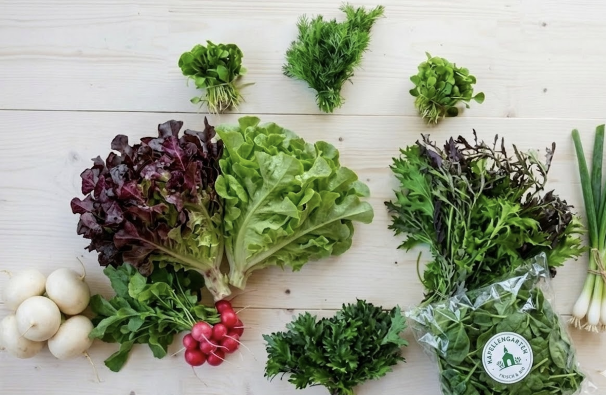
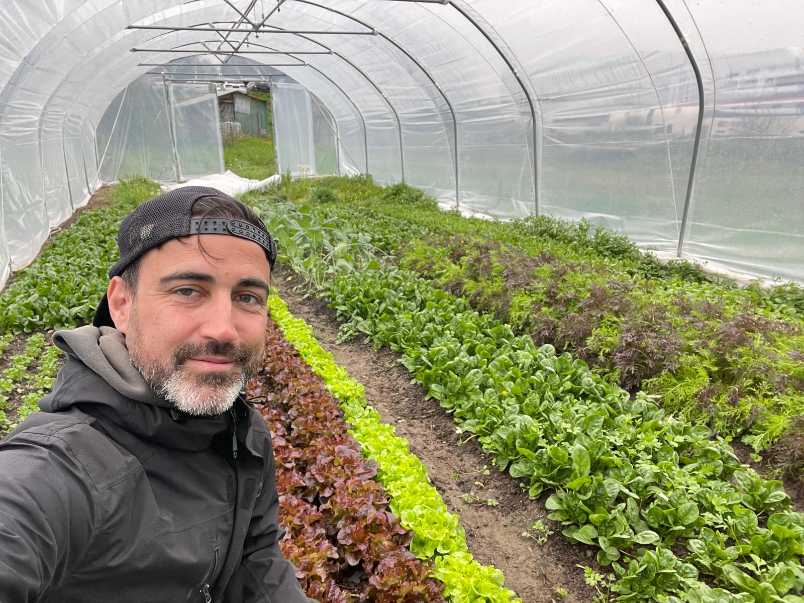

Wangen bei Olten · Schweiz
Samstags abholbar beim Kapellengarten in Wangen bei Olten.
Nächster Abholtag: Samstag, 10–12 Uhr
Einfach vorbeikommen, CHF 25.– pro Gemüsetasche, keine Anmeldung nötig.
Was ist im Gemüseabo?
Jede Woche rund 6–8 verschiedene Gemüsesorten — direkt aus dem Kapellengarten, Dorfstrasse 192, Wangen bei Olten. Die Tasche ist für 1–2 Personen pro Woche berechnet. Klick auf eine Saison für Details.
Bei der Abholung gibt es eine Tauschtasche — schmeckt dir etwas aus der Tasche weniger, tauschst du es einfach gegen etwas anderes aus.

Gemüseabo Saison 2026
Meld dich kurz über das Formular für eine Probier-Gemüsetasche an — dann weiss ich, dass du kommst. Am Samstag zwischen 10 und 12 einfach bei der Kapelle vorbeikommen.
Wenn dir's passt, schliesst du ein Gemüseabo ab — wöchentlich von April bis Oktober. Das Abo hilft mir bei der Anbauplanung. Dafür bekommst du jeden Freitag per Newsletter vorab, was in der kommenden Woche in der Tasche ist — inklusive einer Rezeptidee. Und falls dich etwas weniger anspricht: Bei der Abholung steht immer eine Tauschtasche bereit.
Jeden Samstag 10–12 Uhr bei der Kapelle. Korb mitbringen, Gemüse einfüllen. Wenn du mal verhindert bist, kann jemand anderes für dich abholen — oder wir überspringen die Woche unkompliziert.
Jeden Samstag 10–12 Uhr bei der Kapelle: Dorfstrasse 192, Wangen bei Olten
Du bringst deinen Korb mit und ich fülle ihn mit frisch geerntetem Gemüse. Es gibt auch eine Tauschtasche — Gemüse gegen Gemüse tauschen ist ausdrücklich erwünscht.
Starte mit mir als einer meiner ersten 20 Abokunden in die Saison — es hat noch Plätze frei.
Keine automatischen Zahlungen — die Details klären wir persönlich.

Ich bin Francis. Rund um die historische Kapelle in Wangen bei Olten baue ich den Kapellengarten auf – einen Marktgarten mit wöchentlichem Gemüseabo. Schritt für Schritt, Beet für Beet, Saison für Saison.
Ich arbeite mit kleiner Fläche, viel Handarbeit und permanenten Beeten – eigentlich so, wie es schon meine Grossmutter in ihrem Garten gemacht hat. Den Boden rühre ich nicht mit der Maschine um, sondern lasse ihn in Ruhe wachsen. Denn dort passiert das Entscheidende: in einem lebendigen Boden voller Mikroorganismen, Pilze und feiner Wurzelgeflechte entstehen Geschmack und Nährstoffdichte, die sich nicht düngen lassen. Warum manche alten Methoden so gut funktionieren, ist bis heute nicht restlos verstanden – und genau das finde ich schön daran. Ich teste laufend Sorten, alte wie neue, mit einem einfachen Massstab: wie sie schmecken. Nicht wie sie sich lagern oder transportieren lassen.
Die Kapelle soll mit der Zeit mehr werden als ein Abholort. Ein Samstagvormittag mit Kaffee, frischem Brot vom lokalen Bäcker und einem kurzen Austausch über das, was gerade wächst – ein Treffpunkt für alle, denen es wichtig ist zu wissen, woher ihr Essen kommt.
Wöchentliche Gemüsetasche ab April, samstags bei der Kapelle abgeholt. Der Fokus liegt auf bewährten Kulturen, maximalem Geschmack und dem achtsamen Aufbau eines lebendigen Bodens.
Das Sortiment wächst. Ich teste kontinuierlich neue und seltene Sorten – immer mit dem Ziel, die aromatisch und geschmacklich überzeugendsten Kulturen zu finden. Der Boden wird von Saison zu Saison weiter aufgebaut: mehr Biodiversität, mehr Nährstoffdichte, mehr Frische im Gemüse.
Die historische Kapelle wird zum Treffpunkt: Direktverkauf von Gemüse mit nachgewiesener Nährstoffdichte, Produkte aus der Region, kleines Kapellenkaffee, saisonale Anlässe – ein Ort, der verbindet.
Mein Anspruch ist es, Gemüse mit den höchsten Nährstoffwerten und vollem Geschmack anzubieten.
Ich weiss, was in meinem Boden lebt. Und warum das wichtig ist. Regelmässige Bodenanalysen auf hilfreiche Mikroorganismen sind für mich keine Option, sondern Grundlage.
Du kennst mich, ich kenne dich. Wenn du eine Frage hast, erreichst du mich direkt. Das ist mir wichtig.
Häufige Fragen
Interessiert am Kapellengarten? Fragen zum Gemüseabo oder Garten, ich freue mich auf deine Nachricht.
francis@kapellengarten.ch📍 Dorfstrasse 192, Wangen bei Olten